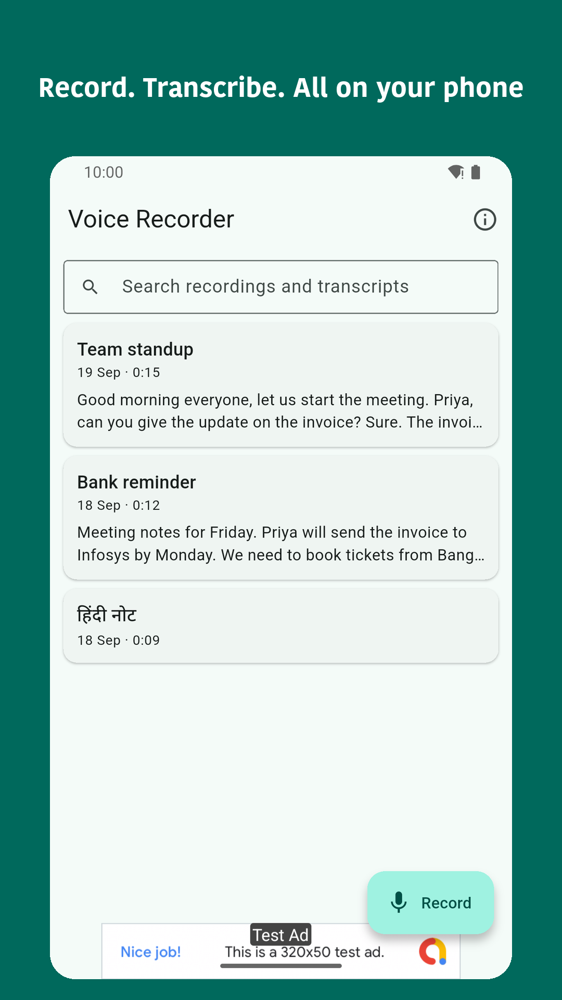
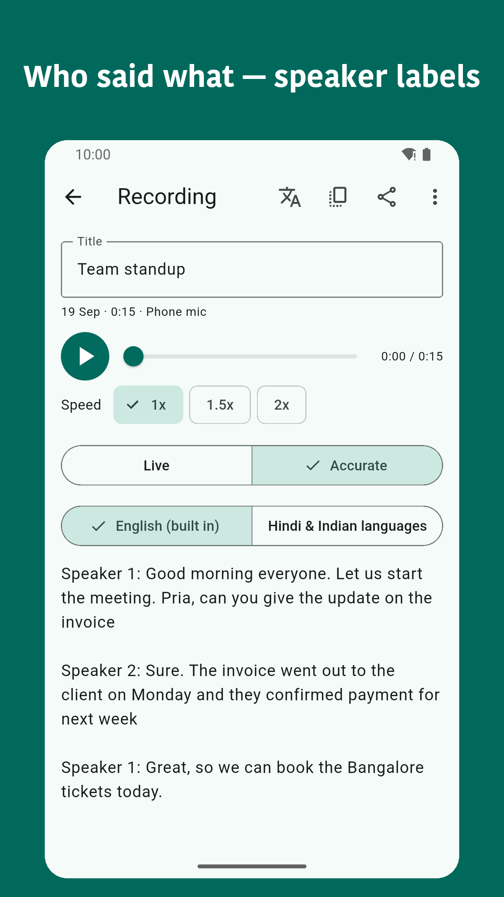
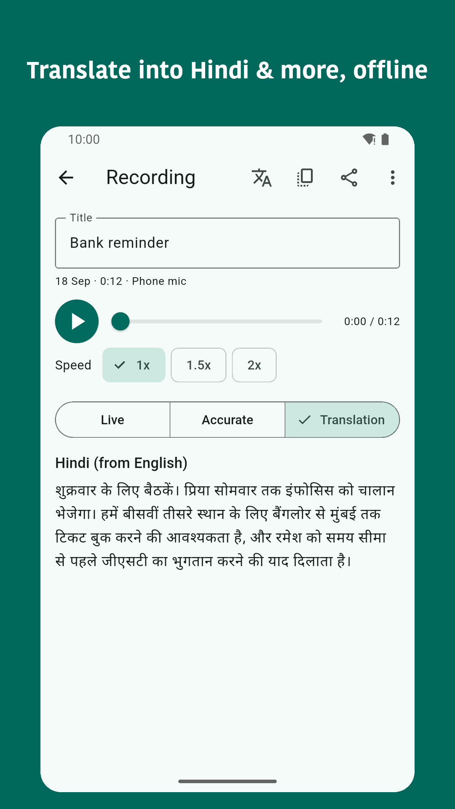
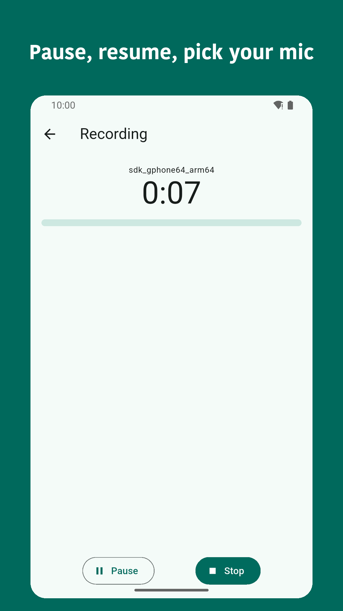
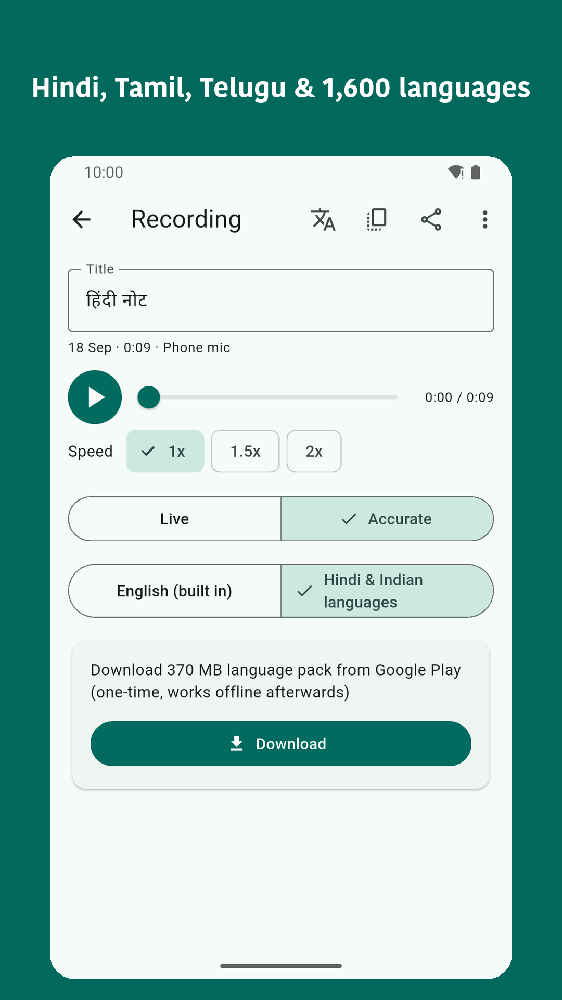
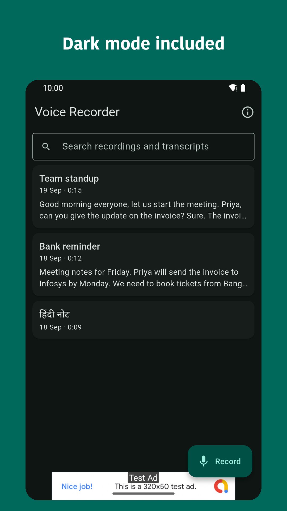

Voice Recorder transcribes on the phone with open-source speech models — live while recording and a slower accurate pass with speaker labels — no internet, nothing uploaded. Recordings, transcripts and translations are created and stored only on the device.






Get Voice Recorder on Google Play (Voice Recorder) — free, offline, no sign-in.
Yes. Recording, live transcription and the accurate transcription pass all run on the phone using speech models built into the app, so no internet connection is needed.
English is built in. Hindi, Tamil, Telugu, Bengali, Kannada, Marathi, Gujarati and 1,600 more languages are available via a one-time 370 MB language pack downloaded from Google Play.
Yes. The accurate transcription pass separates the recording by speaker, labelling who said what.
Yes. Transcripts can be translated offline using Google ML Kit, which runs on the device after a one-time download of about 30 MB per language.
No. Recordings, transcripts and translations stay on the device — nothing is uploaded.
Voice Recorder uses Kroko ASR (CC BY-SA 4.0), NVIDIA Parakeet TDT-CTC 110M (CC BY 4.0), Omnilingual ASR (Apache 2.0), pyannote segmentation (MIT), 3D-Speaker ERes2Net (Apache 2.0) and Silero VAD (MIT), run via sherpa-onnx (Apache 2.0).
Sahi Apps · Privacy policy · hello@sahiapps.com · Last updated 19 September 2026